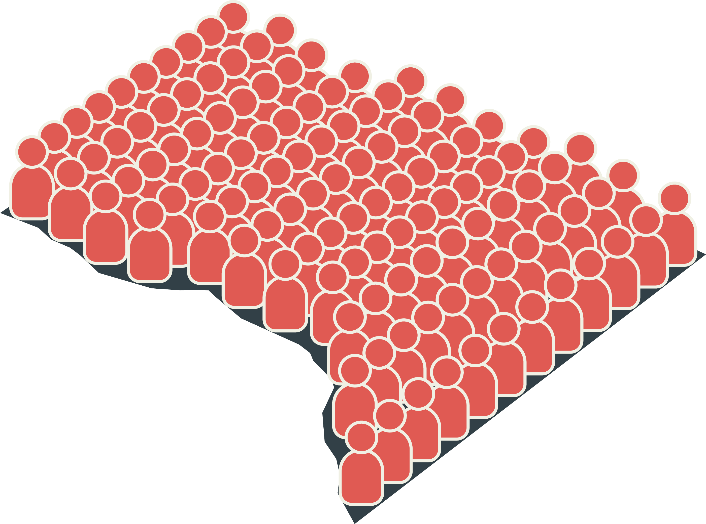
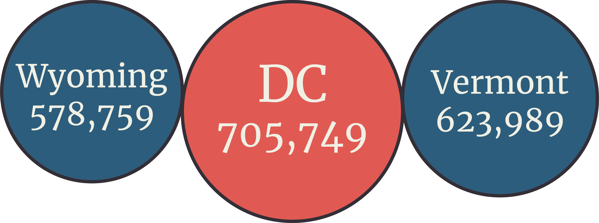
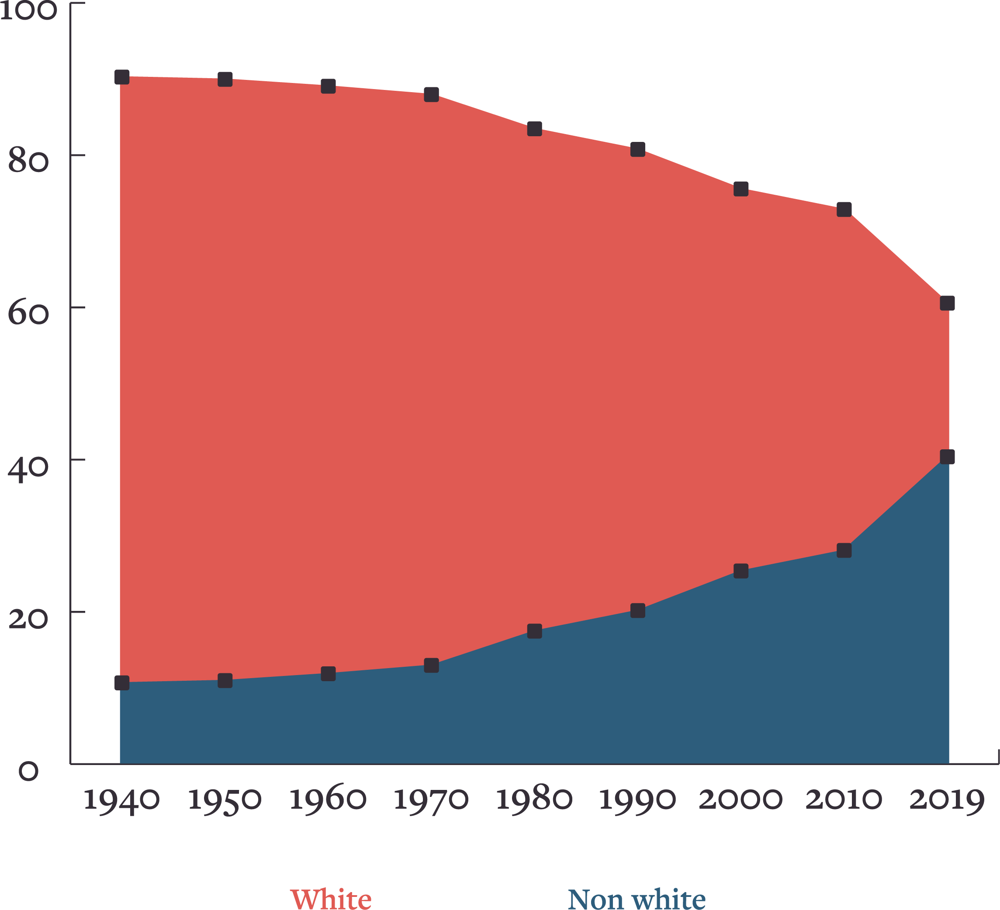
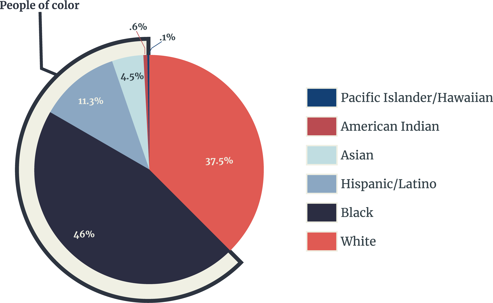
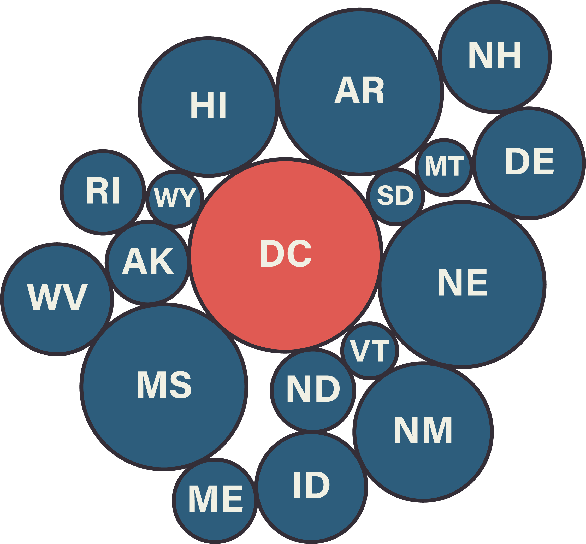
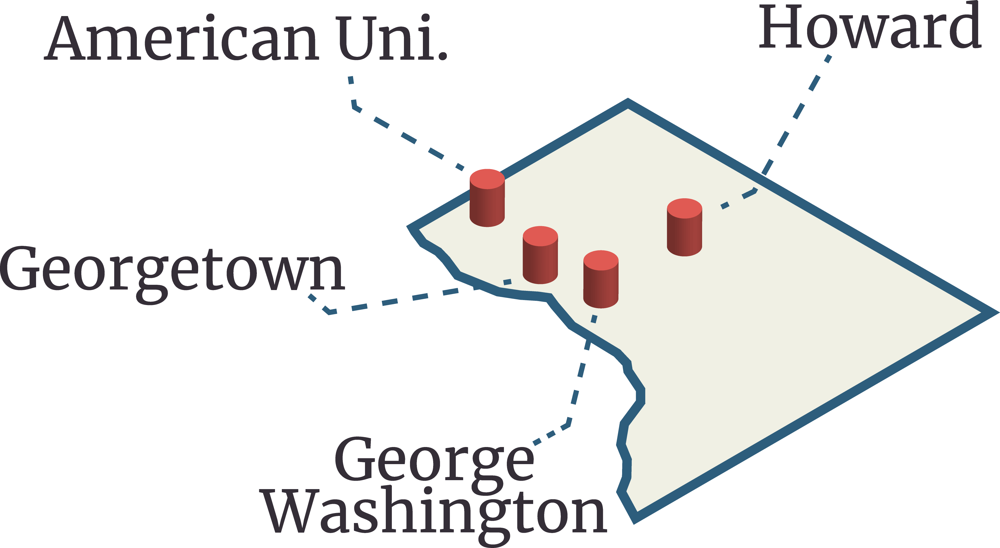

The population has exploded over recent years to 705,749 people!

Washington DC has a larger population than two states!
Both Wyoming and Vermont, states with fewer people, have more representation in the senate than DC.

The ratial demographics is changing very quickly in this country and a place like Washington DC is becoming a better example of what the rest of the country looks like when compared to states with smaller populations.
The current percentages of White Americans living in these regions. This country's demographics have been changing rapidly, and places like DC are becoming a better picture of what the entire country looks like.

Washington DC is one of the most racially diverse regions in the entire country

According to the Bureau of Economic Analysis, as of Q4 2019, Washington DC contributes $148.2 billion to the GDP of the United States. That’s a higher contribution than 17 states.
The average Washington DC resident contributes more in Federal Taxes than any other resident of any state. And even with this amount of taxation, the people of DC are not allowed Senate representation!

DC is home to 19 universities; including 4 prestigious institutions that are internationally recognized.
The largest library in the world is locate in DC. With over 34.5 million books and over 151 million items.